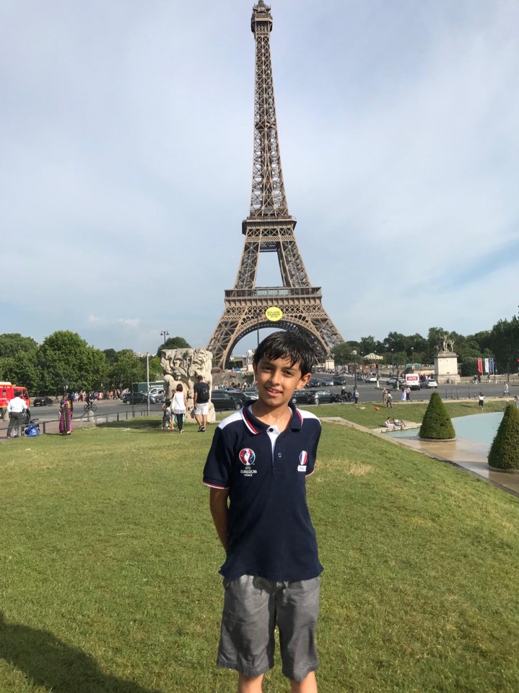
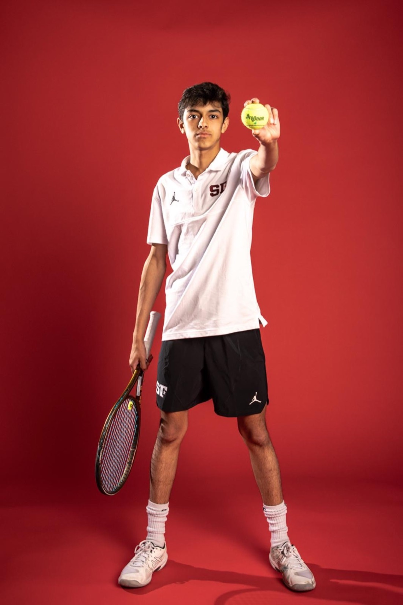
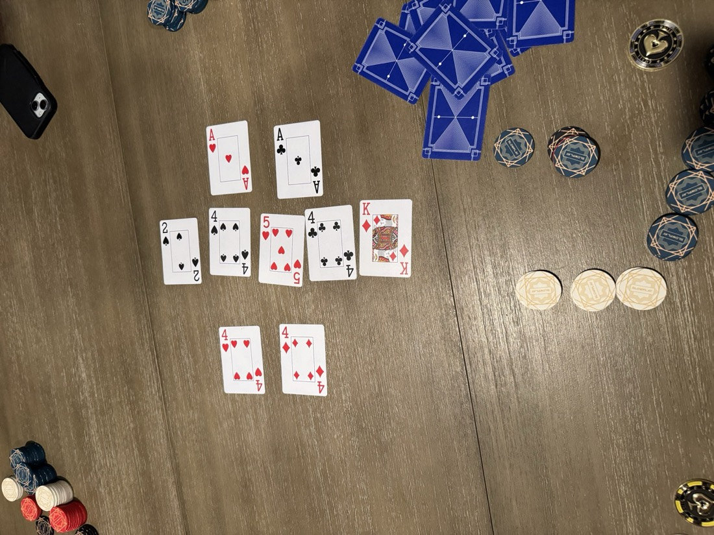
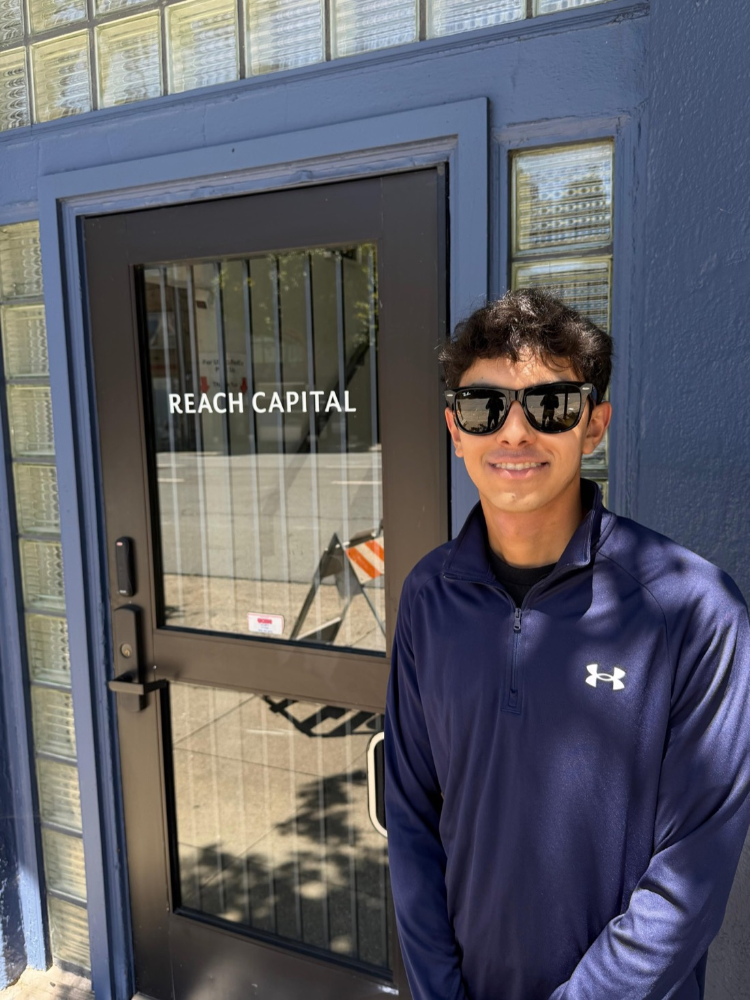
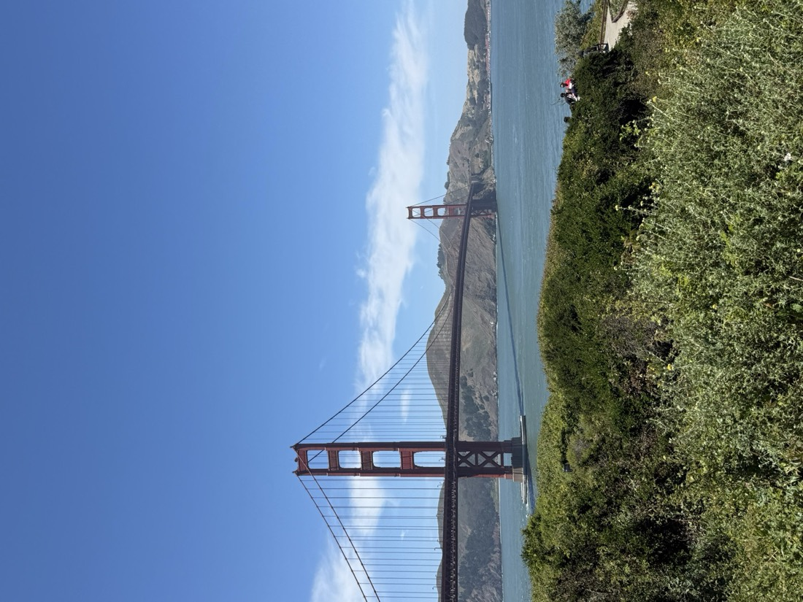

Born here in 2009 — family, Hindi, the start of everything. I cherish my roots: cricket in the driveway with friends, Bollywood movies with my family, Punjabi music. Most of all, the food.
Years later my friend Louie — a passionate, seriously impressive linguist — introduced me to the Indus script: a 4,500-year-old writing system used by my ancestors that no one has ever deciphered. His idea: attack it with computational linguistics. It let me combine my love of language with what I like building most — applied math and CS.
Our work is published in the International Journal of Computer Applications (Vol. 187, Dec 2025), supported by a $5K Emergent Ventures grant from Tyler Cowen / the Thiel Foundation.
We moved here from Bombay when I was little. It's the first city I remember — big, loud, always moving.
It's also where I first heard about markets. My dad worked in finance, and he piqued my interest in econ and business early. That interest stuck: heading my school's Investment Team, interning at a small hedge fund, the VC research — all of it traces back to Wall Street.
HELLOनमस्तेHOLABONJOUR
STOP 03/13 · MY DAD'S PARIS · AGE 9
PARIS
Bonjour.
I first came to France when I was nine. My dad was born here in Paris, and he encouraged me to keep that part of our culture alive — so when we got home, I started advanced French at the International School of Languages. I've been at ISL since 4th grade, even after picking up Spanish at school.
Seven years later I came back and could actually converse with locals. French is a unique part of my heritage, and I want to preserve it.
That's the French. The Spanish side is next. →
ISL FRENCH · SINCE 4TH GRADE
DAD'S HOMETOWN
EN · HI · ES · FR

AGE 9 · FIRST TRIP
STOP 04/13 · EN ESPAÑOL
MADRID
Hola.
The Spanish thread: an advanced track at school, co-heading Spanish Club, and volunteering with Central American refugee youth back in DC — where the language actually gets used. Also: die-hard Carlos Alcaraz fan.
Next stop is where the languages mattered most. →
ADVANCED TRACK
SPANISH CLUB CO-HEAD
VOLUNTEER · REFUGEE YOUTH
STOP 05/13 · THE SERVICE TRIP · MIDDLE SCHOOL
McALLEN
Bienvenidos.
A middle-school service trip to the Rio Grande Valley gave me an incredibly close look at what a border actually is: separated families, people arriving with nothing, many struggling to communicate.
My languages — Spanish, and sometimes French — let me form real, personal connections with the refugees I met.
That week is why I joined IROC back home. Next stop. →
STOP 06/13 · HOME BASE · 38.9072° N, 77.0369° W
WASHINGTON, DC
Every journey needs a home base — mine comes with a beltway. School, a startup, a race team, and research all live inside this loop.
Let’s zoom in.
01 · THE HALLWAYS
Sidwell Friends
I’ve loved Sidwell and the connections I’ve made here. I’ve challenged myself with the hardest classes I can take — math, science, Spanish. The science department picked me to tutor physics, and my classmates elected me to the Honor Committee three years running, where I evaluate violations of our Honor Code. Recently I’ve joined the administration’s AI Focus Group, bringing that Honor Committee experience to help shape our school’s AI policy.
I also lead our Wharton Investment Competition team, co-head the Spanish Club, and am a member of our math, CS, and investment clubs.
PHYSICS PEER TUTOR
HONOR COMMITTEE ×3
AI FOCUS GROUP
JANSSEN LEADERSHIP ACADEMY
Also: varsity tennis and cross country — that story gets its own stop in Orlando. →
02 · THE STARTUP
athletIQ
FOUNDER & CEO · JUL 2023 → NOW
The first recruitment analytics platform for college track & field. As a former runner and a tennis player, I’d watched tennis fix its recruiting with the Universal Tennis Rating while running lagged behind — so we’re making that process equitable and data-driven.
It started as a passion project; hundreds of calls and plenty of pivots later, it’s real. Now signed with 9 NCAA programs — including Stanford and UNC — with $8K in funding from Microsoft and AWS and a data partnership with UTR. And our analytics on performance and wearable data are built to go far beyond track.
SIDWELL ELECTRIC CAR RACE ENGINEERING TEAM · FOUNDER & PRESIDENT · SEP 2023 → NOW
We built a fully electric go-kart-class race car from scratch, funded by the $7K campaign I led — with corporate sponsors including Washington Justice and the Mubadala Open. Success at the ’24, ’25 and ’26 DC EV Grand Prix, plus the 3D-printing innovation prize, earned us an invite to the 2027 Dubai Grand Prix.
Our engineering partnership with the University of Maryland’s Formula SAE team — high schoolers building alongside a collegiate race crew.
04 · THE LAB, PART ONE
George Mason
ASSIP RESEARCH INTERN · 2025 · 9% ACCEPTANCE
FinTech research under Prof. Jiasun Li: verifying academic papers with Intel TDX trusted hardware, plus on-chain analysis of real-world-asset token transactions. Published abstract.
IMMIGRANT & REFUGEE OUTREACH CENTER · COUNSELOR + BACKEND ENGINEER
Two jobs in one. Front of house: summer camp counselor and tutor for refugee youth across the DMV — my languages get used constantly, helping students learn and families feel understood. Back of house: I engineer and validate the data backend behind IROC’s resource directory for immigrant and refugee families, and built the UI families use to access it.
McAllen is where this started — one stop back.
CAMP DAY AT IROC
STAMPED & CERTIFIED
AMC 8HONOR ROLLMAA
MATHCOUNTSDC STATE · 7THindividual
JOHN LOCKE ESSAY→ LONDONstory at that stop
STOP 07/13 · HARD COURTS
ORLANDO
Sunshine, humidity, tennis.
VARSITY TENNIS · SIDWELL FRIENDS
Junior tennis in America runs through Orlando — the USTA’s national campus is here. I’ve played since I was three, and I’m a die-hard fan of the sport.
Representing my school is the best part. Last season I helped us win back-to-back DC State Championships, take the Mid-Atlantic Conference, and reach a national ranking of #5 — and we played the national high school championships right here in Orlando.
tap the ball · keep the rally alive
RALLY ×0
#5 IN THE US
BACK-TO-BACK DC STATE CHAMPS
MID-ATLANTIC CHAMPS
VARSITY XC

TEAM PICTURE DAY
STOP 08/13 · THE LAB
CHARLOTTESVILLE
Wahoowa.
UVA SCHOOL OF DATA SCIENCE · LEAD RESEARCHER · JUL 2025 → NOW
With Prof. Tashman, I lead research on a LightGBM ML ranking model that measures economic frictions in the venture market — how founder identity, nationality, and stage affect funding outcomes, and what a “best fit” between founder and investor actually looks like.
We deployed the model with 434 Accelerator, the Black Entrepreneurship Alliance, Astia, StartOut, and Black Girl Ventures to match underserved founders with investors — reaching nearly 20,000 founders. The paper is in review, and the work was presented at the 2026 UVA Undergraduate Research Symposium and ICMBF 2026.
JOHN LOCKE INSTITUTE · GLOBAL ESSAY PRIZE · FINALIST
One of the biggest student essay competitions in the world. My econometrics essay on optimal global population was shortlisted as a finalist and recognized with merit — which came with an invite to the finalists’ dinner in London: great talks, and a room full of sharp, driven kids.
The essay pulled me into the philosophical side of economics, and showed me how ideas from biology and math can put numbers on open-ended questions.
FINALIST · MERIT
ECONOMETRICS
FINALISTS’ DINNER · LONDON
STOP 10/13 · THE SPARK
MARANELLO
Ciao.
I’m a die-hard Ferrari F1 fan, so visiting Ferrari’s hometown was a pilgrimage. I watched a V12 warm up and went home wanting to build something with wheels. Enzo Ferrari’s builder story is what pushed me to start SECRET — Sidwell’s electric race team.
The rest is back in the DC chapter: three years at the DC EV Grand Prix, the 3D-printing innovation prize, and an invite east.
I love card games — I’ve played rummy with my grandmother for as long as I can remember, and later started playing poker for fun with friends. Poker is applied probability: expected value, pot odds, reading ranges. I play tight and I keep count.
It’s the same math behind everything else here — the Investment Team, the hedge fund internship, the VC research. Statistics and game theory are a throughline. My favorite class at Sidwell, Programming & Probability, brought exactly that into the classroom.
PROBABILITY
GAME THEORY
STATISTICS
RUMMY → POKER

HOME GAME · COUNTING OUTS
STOP 12/13 · THE ARENA
SAN FRANCISCO
Hey.
REACH CAPITAL · SUMMER ASSOCIATE INTERN · JUN–JUL 2026 · SELECTED 1 OF 800+
The UVA research met the real market here: technical and market diligence on live pipeline deals, working directly with the investment partners. I designed founder-facing resources for portfolio companies like Replit, Desmos, and GPTZero, and externed with Sam Altman-backed Campus.edu.
It was also my first time living alone, across the country from everyone I knew. I got thrown in the deep end, learned fast, and met some of the smartest, friendliest people I’ve ever been around. It seriously motivated me to keep building.
1 OF 800+
REPLIT · DESMOS · GPTZERO
CAMPUS.EDU

DAY ONE AT REACH

THE COMMUTE VIEW
FINAL CALL · DESTINATION TBD
NEXT STOP:
The next stamp is a college campus — which one is still boarding. Wherever it is, the plan stays the same: keep building, surrounded by people who want to make things and make change.
Also on the calendar: SECRET is invited to the 2027 Dubai Grand Prix. 🏎